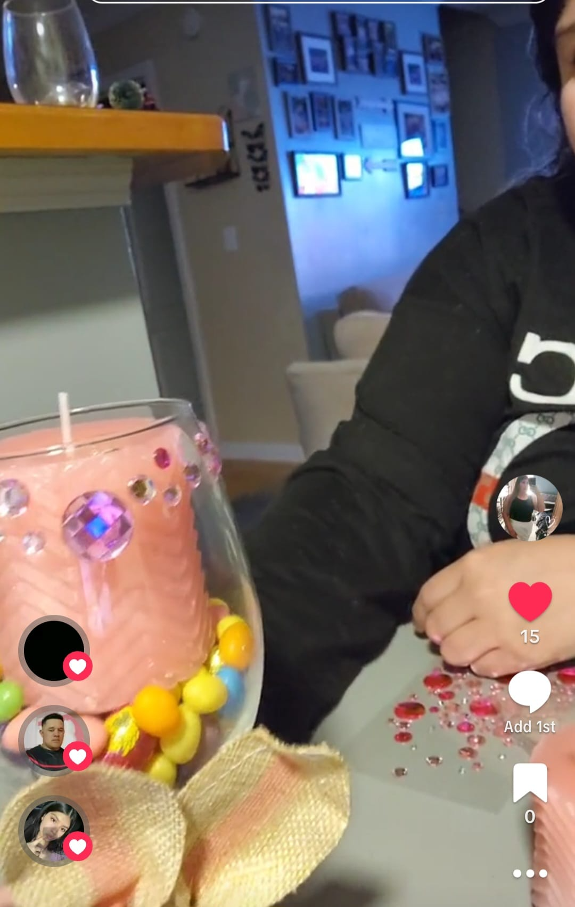
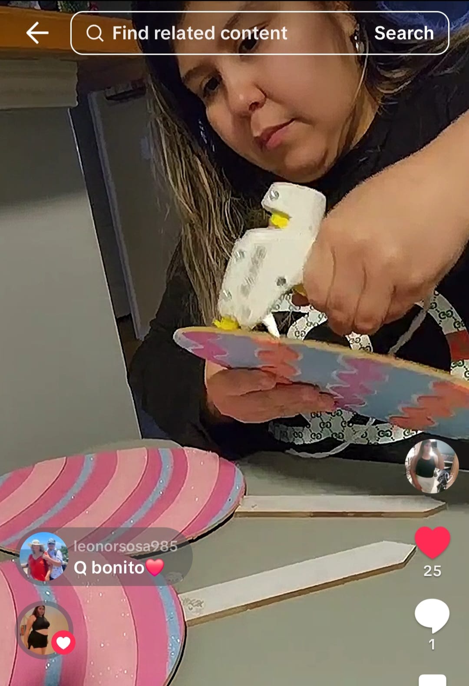
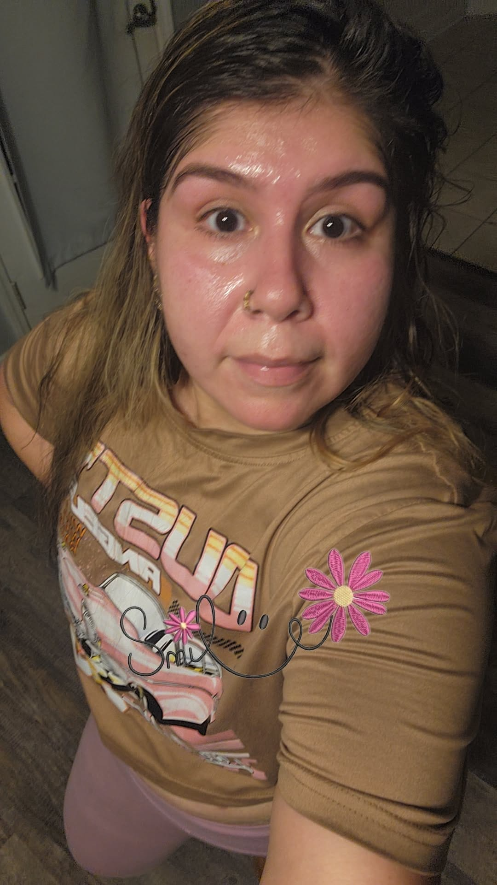

What do I do for fun?
Yesi spends her newfound time doing the things she loves. She spends time with her family, taking them out on adventures and making memories. She has a passion for decorating and a mind full of innovation for DYI projects. She loves to make party centerpieces, finding ways to liven up the house, and creating pretty décor. Her touch has even spread to her daughter who makes those ribbon flower bouquets that is trending. She also enjoys cooking and trying out new recipes. When she isn’t creating things, she is outside taking a walk in nature and getting her steps in.


